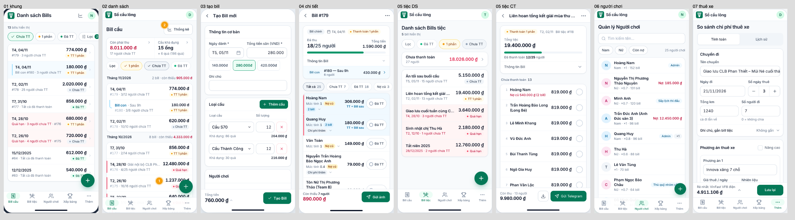

Tổng hợp đề xuất giao diện điện thoại: Sổ cầu lông
05/11/2026 · PM tổng hợp từ 7 nhóm designer · Bước 1: chờ chủ dự án duyệt · chưa sửa dòng code nào trong repo
-
Đợt này sửa bố cục và luồng bấm trên điện thoại: thông tin
quan trọng lên đầu, nút chính trong tầm ngón cái, danh sách gọn lại,
bỏ hộp
alert(). Màu và phông giữ hệ thống đã duyệt ngày 22/10. - Phủ toàn bộ chức năng: khung app, đăng nhập, bill cầu (danh sách, tạo, sửa, chi tiết), bill tiệc, người chơi, master (4 tab), quyền, thuê xe, xếp bảng.
- Chỉ sửa frontend: không thêm API, không migration. Ảnh bill xuất gửi Telegram giữ nguyên: nhóm 04 và 05 đã xuất thử và đối chiếu. Desktop giữ nguyên, vì thay đổi chỉ áp dưới 640–768 px.
- Rà chéo xong: 17 mẫu dùng chung đã đánh số lại cho khỏi trùng. PM đã chốt 8 chỗ các nhóm vẽ lệch nhau (mục 3).
- Trong lúc đọc code, các designer thấy 14 lỗi có sẵn ngoài phạm vi giao diện. PM đã kiểm lại 2 lỗi nghiêm trọng nhất: backend không kiểm quyền ở API nào, và sửa bill làm mất dấu "Đã TT" (mục 6).
alert / confirm /
prompt được thay bằng thông báo ngắn, lỗi ngay tại ô
hoặc hộp xác nhận

Ảnh ghép màn chính phương án A, lấy từ ảnh chụp của từng nhóm. Khi triển khai, các màn gốc 02, 05, 06, 07 sẽ theo thanh trên gộp của nhóm 01 (xem 3.1).
1. Bảy bản đề xuất
| Nhóm | Phương án A (khuyên dùng), ý chính | Việc chính: cũ → mới | Công A / B | PM khuyên |
|---|---|---|---|---|
|
01 Khung app + bộ mẫu |
Gộp thành một thanh trên 56 px (màn gốc là tiêu đề trang, màn con
là ‹ + tiêu đề + ⋯). Tab dưới chỉ hiện ở màn gốc. Thông báo ngắn
thay alert. Sheet nổi lên trên bàn phím. Màn đăng
nhập có dải sân cầu lông. Vẽ đủ bộ mẫu M1–M15.
|
Gửi Telegram rồi quay về 3 → 2 · đăng nhập trên iPhone 6 → 3 · mở link không có quyền: bị kẹt → 1 | 4–5 ngày / 2,5 | A, làm trước tiên |
|
02 Bill cầu: danh sách |
Ô tóm tắt "Còn phải thu" và "Cầu khả dụng" lên đầu trang. Danh sách nhóm theo tháng, đầu nhóm dính. Hàng thấp từ 91 xuống 64 px, bỏ nút Xóa trên hàng. Ngày in "T4, 04/11". "Xem thêm" thay phân trang. Thống kê chọn tháng bằng ‹ ›. | Tìm bill tháng trước còn nợ: ~8 chạm + 2 ô → 1 chạm | ~3 ngày / ~1 | A |
|
03 Bill cầu: tạo / sửa |
Một trang cuộn. Thẻ người chơi 465 px thành hàng 65 px, chạm hàng thì mở ra sửa tại chỗ. Sheet chọn nhiều người liên tục, Enter chọn kết quả đầu. Thanh dưới đáy luôn có tổng tiền và nút Tạo. Lỗi báo ngay dưới ô. | Tạo bill 12 người: 21 chạm, cuộn 8.100 px → 16 chạm, cuộn 450 px | 3–4 ngày / ~1,5 | A |
|
04 Bill cầu: chi tiết |
Thẻ tóm tắt "Đã thu 18/25" có thanh tiến độ. Chip lọc Chưa TT / Đã TT / Nợ cũ. Nút "Đã TT" 84×44 ở mép phải, bấm xong hàng không nhảy chỗ. Nút "Gửi ảnh" có xem trước ảnh. Hộp nợ cũ ghi số tiền trên nút. | Xuất ảnh rồi gửi nhóm: cuộn 3.000 px + 3 chạm → 2 chạm, có xem trước | 2,5–3 ngày / ~1 | A |
| 05 Bill tiệc | Cùng kiểu với bill cầu: hàng gọn, chip lọc, "Chưa thanh toán" lên đầu, thanh dưới đáy có "Còn thu" + Gửi Telegram. Hiện nợ cũ trên màn (hiện chỉ có trong ảnh). Tùy chọn A+: "Lấy người từ bill cầu cùng ngày". | Tạo bill 15 người: 23 → 24 chạm (A), 8 chạm (A+); trang 5.000 → 2.000 px | 3,5–4 ngày / ~2 | A; A+ làm sau |
| 06 Quản lý | Người chơi thành hàng 64 px, avatar màu nam/nữ, hiện tiền nợ. Thêm nhanh liên tục, có cảnh báo trùng tên. Master 4 tab vừa 360 px. Loại cầu có số tồn to và nút "Nhập kho" trên hàng. Quyền chia nhóm gập / mở. | Thêm nhanh 3 người: 9 chạm, 5 ô → 6 chạm, 3 ô | 4–5 ngày / ~1,5 | B trước |
|
07 Thuê xe + Xếp bảng |
Thuê xe: thanh dưới đáy luôn hiện "Rẻ nhất: … · tổng", mỗi phương án một thẻ kết quả, số ngày có nút −/+. Xếp bảng: hàng VĐV 60 px, sheet thêm VĐV liên tục, bảng thi đấu lưới 2 cột. | Nhập 16 VĐV rồi chia 4 bảng: 68 → 29–51 chạm · thuê xe 11 → 11 (thấy ngay xe rẻ nhất) | 5–6 ngày / 2,5–3 | B trước |
Ngày công là ước lượng của từng designer (S < ½ ngày, M ½–1 ngày, L > 1 ngày). Toàn bộ A: ~26–30 ngày. Toàn bộ B: ~12 ngày. PM khuyên gói hỗn hợp: A cho 01–05 (luồng dùng hằng buổi ở sân), B cho 06–07 (dùng thỉnh thoảng), tổng ~21–24 ngày. Nâng 06–07 lên A sau vẫn được, nhưng sẽ làm lại một phần.
2. Bộ mẫu dùng chung sau khi rà chéo
Mọi màn dùng chung các mẫu này để cùng một kiểu bấm ở mọi nơi. Chi tiết kích thước nằm ở trang nhóm 01, mục 5 và 16.
| Mã | Mẫu | Ghi chú sau rà chéo | Ai làm |
|---|---|---|---|
| M1 | Thanh đầu màn con: ‹ + tiêu đề + ⋯ | Thay thanh "Sổ cầu lông", không chồng hai thanh. Không có ⋯ nếu màn không có hành động phụ (Tạo / Sửa bill). | 01 |
| M2 | Thanh hành động dính đáy | Màn con: tab ẩn. Màn gốc (Thuê xe): đứng trên tab. Vùng tổng tiền bấm được để mở sheet tóm tắt (03). | 01 (ActionBar) |
| M3 | Hàng danh sách bấm cả hàng | Không đặt nút Xóa trên hàng. Cao 60–76 px. | 01 |
| M3b | Hàng có nút đuôi | Gộp đề xuất của 04, 05 và 06. Nút đuôi có chữ, ≥ 84×44 (ví dụ "Đã TT", "Nhập kho"), không bao giờ là Xóa, không lồng nút trong nút. | 01 vẽ · 04, 05, 06 dùng |
| M3c | Hàng mở ra tại chỗ | Dùng để sửa người trong form tạo bill (03) và xem chi tiết người trong màn chi tiết bill (04). Mỗi lúc chỉ mở một hàng. | 03, 04 |
| M4 | Chip lọc + nút "Lọc" | Nút "Lọc" (có số đếm) ghim bên trái, chip cuộn bên phải. Có ≤ 4 lựa chọn một-chọn thì chỉ cần chip, không có nút "Lọc". Chip đang bật có dấu ✓. | 01 |
| M5 | Bottom sheet |
Thêm biến thể "chọn nhiều" (cao cố định, không tự bật bàn phím,
chân sheet ghi "Xong · N") và biến thể sheet sửa có nút Xóa đầu
chân sheet. Modal thêm tùy chọn không tự focus và nổi
lên trên bàn phím.
|
01 |
| M6 | Ngày |
formatDateShort: "T4, 04/11"; khác năm in
"04/11/2025". Không dùng "Hôm nay".
|
01 |
| M7 | Số tiền | In qua formatters.js; số chính 20 px đậm. |
- |
| M8 | Thông báo ngắn thay alert() |
Đứng trên tab, FAB hoặc M2. Báo thành công tắt sau 4 giây, báo lỗi 7 giây và có "Thử lại". Không có "Hoàn tác" (cần API). | 01 (useToast) |
| M9 | Nút tạo mới (FAB) | Đáy tab 56 px + vùng an toàn + 16 px. | 01 |
| M10–M12 | Đầu nhóm dính · ô tóm tắt bấm được · chọn kỳ ‹ › |
Nhóm 02 đề xuất, nhóm 01 nhận và sửa.
PeriodStepper do 02 viết, các nhóm khác dùng lại.
|
01 · 02 |
| M13–M15 | Lỗi tải / rỗng · lỗi ngay tại ô · hàng menu trong sheet | M14 thay 21 alert() kiểm form. |
01 |
| M16 | Chọn nhanh 2–3 lựa chọn (Nam / Nữ…) |
06 và 07 cùng đề xuất. 06 đặt mã M10, trùng với 02, nên
đổi thành M16. Dùng lại kiểu .tab-list trong
form.
|
01 |
| M17 | Ô số có nút −/+ |
Cho số ngày thuê, số bảng, level (07). Thêm dưới dạng tùy chọn của
NumberInput, kèm tùy chọn bôi đen cả số khi chạm
(03).
|
01 |
3. Chỗ lệch giữa các bản: PM đã chốt, áp dụng khi triển khai
3.1 Thanh trên ở màn gốc
Nhóm 01 gộp tiêu đề trang vào thanh trên. Nhóm 02, 05, 06, 07 vẽ theo khung cũ: thanh "Sổ cầu lông" rồi tiêu đề trang bên dưới. Chốt: theo 01 nếu chủ dự án chọn 01-A. Bốn màn kia bỏ dòng tiêu đề riêng và lên thêm khoảng 50 px. Nếu chọn 01-B thì giữ như mockup của từng nhóm.3.2 Nút đánh dấu đã trả
Nhóm 04 dùng nút có chữ "Đã TT" 84×44, nhóm 05 dùng nút tròn 44 px không chữ. Chốt: dùng kiểu của 04 cho cả bill cầu lẫn bill tiệc. Lý do: có chữ thì rõ nghĩa hơn, vùng chạm rộng hơn, và giống chữ "Đã TT" người dùng đang quen.3.3 Vị trí nút "Lọc"
Nhóm 01 đặt cuối hàng chip, nhóm 02 và 05 đặt đầu hàng. Chốt: ghim trái. Ở bề ngang 360 px, hàng chip cuộn ngang làm nút đặt cuối bị đẩy ra ngoài màn: chính mockup của 01 đã bị cắt còn "Lọc 2".3.4 Chiều cao thanh tab
Brief ghi 64 px, nhưng app thật đang 56 px. Nhóm 01 chốt 56 px, mọi vị trí tính theo biến--tab-bar-h. Mockup của 06 và
07 vẽ 64 px, khi triển khai chỉnh theo biến này. Không phải vẽ lại.
3.5 Sheet chọn người
Nhóm 03 (PlayerPickerSheet) và nhóm 05
(PartyPlayerPicker) mỗi bên vẽ một sheet.
Chốt: chỉ làm một component do 03 viết, 05 dùng lại. Vì vậy 05
triển khai sau 03.
3.6 Hai hộp thoại dùng chung
Hai hộpSelectPaymentAccountDialog (thêm xem trước ảnh,
confirmLabel, bỏ qua khi chỉ có một tài khoản) và
PayOldBillsDialog do 04 làm, 05 dùng lại. Thay đổi
đều là thêm prop tùy chọn.
3.7 Chữ trên nút bỏ đánh dấu
Hộp bỏ đánh dấu đang có nút "Xóa". 04 và 05 cùng đề xuất đổi thành "Bỏ đánh dấu", dùngconfirmLabel có sẵn của
ConfirmDialog.
3.8 Tiêu đề màn gốc
Tiêu đề đang lẫn kiểu: "Danh sách Bills", "Danh sách Bills tiệc", "Quản lý Người chơi". Nhóm 02 đề xuất "Bill cầu". PM đề xuất dùng đúng nhãn tab ("Bill cầu", "Bill tiệc", "Người chơi", "Xếp bảng", "Thuê xe", "Master", "Quyền"). Đây là đổi chữ cũ nên cần chủ dự án gật (mục 4, câu 4).4. Điều chủ dự án cần quyết
4.1 Chung cho toàn app
| # | Câu hỏi | Nhóm | PM khuyên |
|---|---|---|---|
| 1 | Chọn A hay B cho từng nhóm (bảng ở mục 1) | tất cả | A cho 01–05, B cho 06–07 |
| 2 | Gộp thanh trên: bỏ tầng "Sổ cầu lông" riêng, màn con dùng thanh ‹ ⋯ | 01, 03, 04, 05 | Có |
| 3 | Ẩn tab dưới đáy ở màn chi tiết bill (cả bill cầu và bill tiệc), giống màn tạo / sửa | 01, 04, 05 | Có |
| 4 | Tiêu đề màn gốc dùng đúng nhãn tab ("Bill cầu" thay "Danh sách Bills"…), áp cả desktop | 02, PM | Có |
| 5 | Màn đăng nhập: dải sân cầu lông (A) hay giữ thẻ trắng (B) | 01 | A: trông riêng, không giống form mẫu |
| 6 | Giữ thanh tab 56 px | 01 | Có |
4.2 Đổi cách app chạy (không chỉ đổi giao diện)
| # | Thay đổi | Nhóm | PM khuyên |
|---|---|---|---|
| 7 | "Đã trả hết" (đánh dấu mọi bill của một người) phải hỏi lại trước khi làm. Hiện bấm một lần là đổi ngay. | 02, 05 | Có |
| 8 | Bấm "Đã TT" xong, hàng đứng yên tới lần mở trang sau. Hiện hàng nhảy xuống cuối nên dễ bấm nhầm người kế. | 04, 05 | Có |
| 9 | Hiện nợ cũ trên màn chi tiết bill tiệc. Hiện chỉ có trong ảnh xuất, nên số trên màn khác số trong ảnh. | 05 | Có |
| 10 | Ẩn nút Xóa / Đã TT theo quyền ở màn chi tiết (Dashboard đã ẩn, màn chi tiết thì chưa) | 04, 05 | Có, nhưng xem lỗi 6.1 |
| 11 | Trên điện thoại, "Xuất Bill" mở bảng chia sẻ của máy (lưu vào Ảnh, gửi Zalo); máy không hỗ trợ thì tải file như cũ | 04 | Có |
| 12 | Bỏ qua bước chọn tài khoản nhận tiền khi chỉ có một tài khoản đang bật (bớt 1 chạm) | 05, 04 | Có |
| 13 | Thống kê không phụ thuộc bộ lọc ngày của danh sách. Hiện tháng nằm ngoài khoảng lọc ra 0. | 02 | Có |
| 14 | Bỏ ô "Số bill / trang" trên điện thoại (thay bằng "Xem thêm") | 02 | Có |
| 15 | Ảnh "Xuất bảng" thi đấu đổi sang khung 720 px, 2 cột, áp cả desktop. Đây là ảnh xuất duy nhất bị đổi. | 07 | Tùy chủ dự án (chỉ khi chọn 07-A) |
Câu hỏi riêng của từng nhóm, như bill con có điền sẵn 280k không, đổi "Unit price" thành "Tiền cho mức 1", hay có làm tròn nghìn số "/người" ở thuê xe không, nằm ở mục "Cần chủ dự án quyết" cuối mỗi trang. Chữ mới chờ gật nằm ở mục "Chữ mới" của từng trang: 01 · 02 · 03 · 04 · 05 · 06 · 07.
5. Lộ trình triển khai (bước 2, chỉ chạy sau khi duyệt)
01 Khung app + nền
Thanh trên và M1,
ActionBar,
useToast, Modal (bàn phím, tắt tự focus),
class M3, M4, M10, M11, M13, M14, formatDateShort, tùy
chọn −/+ và bôi đen số cho NumberInput, ẩn tab ở màn chi
tiết, màu ô tích. Vào main trước mọi nhóm.
02 · 03 · 04 · 06 · 07
Không nhóm nào sửa file của đợt 0. Cần thêm class chung thì ghi vào báo cáo để PM gom lại. 03 sở hữu
PlayerPickerSheet + PlayerSelector, 04
sở hữu hai hộp thoại dùng chung.
05 Bill tiệc
Dùng lại sheet chọn người của 03 và hộp thoại, hàng M3b của 04, nên làm sau khi 03 và 04 đã vào
main.
Cổng kiểm:
npm test 0 lỗi, ESLint không thêm lỗi so với mốc, build
ok. Chụp ảnh qua máy chủ giả ở 360, 390, 430 và 1280 px. Đối chiếu ảnh
bill xuất với bản main. Chủ dự án xem ảnh rồi mới merge.
Không deploy khi chưa được bảo.
6. Lỗi có sẵn phát hiện khi đọc code (ngoài phạm vi, chưa sửa)
Đề xuất tách thành task riêng. Hai lỗi đầu nên làm trước cả đợt giao diện.
| # | Lỗi | Chỗ | Mức | Kiểm chứng |
|---|---|---|---|---|
| 6.1 |
Backend không kiểm quyền ở API nào. Route chỉ yêu cầu đăng
nhập, 26 hàm authorize() đều
return true, không có Gate / Policy. Theo code thì
tài khoản nào đã đăng nhập cũng gọi API trực tiếp để xóa bill, sửa
vai trò hay tự cấp quyền được. Quyền hiện chỉ dùng để ẩn nút trên
giao diện.
|
routes/api.php:27,
Requests/StoreRoleRequest.php:14 ("TODO"),
PartyBillController.php:261
|
Cao · bảo mật | PM đọc code xác nhận, chưa gọi API thật |
| 6.2 |
Sửa bill cầu làm mất dấu "Đã TT": xóa hết người rồi tạo lại
với is_paid = false.
|
Api/BillController.php ~440–486 |
Cao · dữ liệu | PM đọc code xác nhận |
| 6.3 | Nợ cũ có thể bị cộng 2 lần ở khối "DS chưa thanh toán" |
BillController.php:182 +
Dashboard.jsx:344
|
Vừa |
Giả thuyết. Kiểm bằng cách đếm
bill_players.debt_amount <> 0
|
| 6.4 | Chia bảng thi đấu dồn phần dư vào Bảng 1: 16 VĐV chia 4 bảng ra 6/6/4/0 | BracketController.php:106–122 |
Vừa | Designer chép vòng lặp ra chạy thử, chưa chạy controller thật |
| 6.5 | "Thêm nhanh người chơi" tạo tài khoản mật khẩu cố định "password" | PlayerSelector.jsx:150–159 |
Vừa · bảo mật | Designer đọc code |
| 6.6 | Đánh dấu bill chính tự đánh dấu bill con, nhưng bỏ đánh dấu thì bill con vẫn giữ | BillDetail.jsx:159–186 |
Vừa | Designer đọc code |
| 6.7 | Bill con còn nợ bị ẩn khi bill chính đã trả xong | Dashboard.jsx:471–475 |
Vừa | Designer đọc code |
| 6.8 | Ngày mặc định lấy theo UTC: mở màn từ 0h đến 7h sáng giờ Việt Nam ra ngày hôm qua |
CreateBill.jsx:39,
ShuttlesManagement.jsx:15
|
Thấp | Designer đọc code |
| 6.9 |
Câu lỗi đọc message nhưng máy chủ trả
error, nên người dùng chỉ thấy "Request failed…"
|
CreateBill.jsx:281, EditBill.jsx:440
|
Thấp | Designer đọc code |
| 6.10 | Tồn kho cầu có thể âm vì trừ kho không chặn | BillController.php:665 |
Thấp | Designer đọc code |
| 6.11 | Trả hết bill tiệc gửi song song từng bill: một bill lỗi thì các bill khác đã đổi mà giao diện không cập nhật | PartyBills.jsx:247–288 |
Thấp | Designer đọc code |
| 6.12 | Nút Xóa bill bấm được 2 lần khi đang chờ API | Dashboard.jsx:217–226 |
Thấp | Designer đọc code |
| 6.13 | Danh sách VĐV lọc theo người tạo, nên vai trò "Xem bảng thi đấu" gần như không thấy gì | TournamentBrackets / API |
Thấp | Designer đọc code |
| 6.14 |
Máy chủ demo trả sai tên trường (court_cost,
ratio), nên demo hiện "Tiền sân 0 ₫". App thật không
bị.
|
FRONTEND/demo/api.mjs |
Thấp · chỉ demo | Designer so với API thật |
Còn hai giả thuyết cần thử trên điện thoại thật:
NumberInput gõ "0,4" trên iPhone vùng Việt Nam có thể ra 0,
và khe 8 px giữa thanh "Copy kết quả" và tab ở màn Thuê xe.